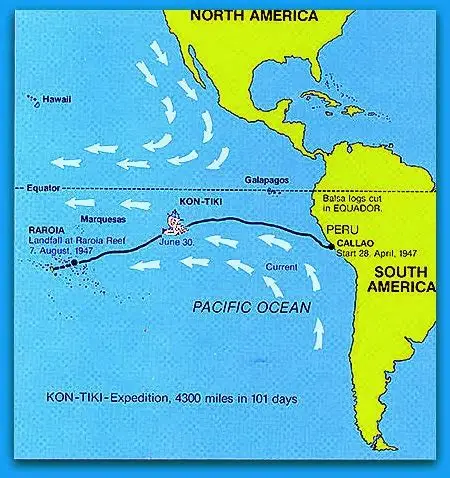

Ruta de la Expedición Kon-Tiki
La expedición partió del puerto de Callao (Perú) el 28 de abril de 1947 y llegó al atolón Raroia, en la Polinesia, tras 101 días de viaje. Recorrieron aproximadamente 7.000 km impulsados solo por las corrientes marinas y el viento.

Mapa de la ruta seguida por la balsa Kon-Tiki.